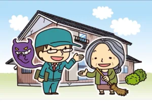

- 目次
- 悪徳業者に騙された
- 雨漏りがすぐ再発
- イメージと違った
- 近隣トラブル
- まとめ
悪徳業者に騙された
屋根修理の失敗談で悲しいことに一番多いのが悪徳業者による被害です。
特に多いのが、訪問販売業者とのトラブルです。
悪徳訪問販売業者のパターンを紹介します。
①「近所で工事をしていたら屋根が壊れているのを見つけた。」
②「とりあえず屋根に登って確認します。」
③「すぐに修理できます。」
④「危険な状態なのですぐに工事が必要。」

訪問販売の入り口の常套句です。近所で他の人が依頼しているということで警戒心を解
きつつ、住人が見えない屋根の上の破損を伝えてきます。本当に破損しているのであれば、
「付き合いのある業者に見てもらいます。」と伝えれば優良業者であれば引きます。
「見てみるだけでも」などと、食い下がってくる業者はほぼ悪徳業者です。
まずは登らせずにその場で名刺を置いて帰るかどうかも重要なポイントです。
結果的に付き合いのある業者に見てもらったけど見積に納得がいかなければ、破損を指
摘した自分たちに依頼が舞い込む可能性があります。
破損を伝えておきながら名刺を置いて行かないのは破損がないことを知っている。嘘を
ついた業者と認識される。そんな懸念があるに違いありません。
信頼できる業者より前に悪徳業者に屋根の上に登られてしまうと、壊れていなかったの
に壊れた状態にされる恐れがあります。
実際、大沼商会がそういった悪徳業者の後に依頼が来て登ると不自然に釘が抜けていた
りすることがあります。家のほとんどの工事は知識がなくとも実際に目で確認すること
が出来ます。外壁や基礎のひび割れ、塗装の劣化など見れば工事の必要性がわかるとは思
います。
しかし、屋根の上は業者が取った写真でしか確認することが出来ず、その写真を撮る以前
の状態を確認することが出来ません。そのため屋根修理業界は特に悪徳業者が多いので
す。
屋根の修理代金は工事内容によってピンキリです。例えば釘が抜けているので釘を打つ。
この程度であれば数千円で出来てしまいます。訪問業者に屋根に登られて数十万円その
場で契約となれば考えるかもしれませんが、数千、数万円程度なら契約してその場で済ま
せてしまう方が多いです。
悪徳業者目線、屋根に登りさえすれば釘を抜いて軽い工事をして数万円売り上げること
が可能なわけです。
もし本当に自然に釘が抜けていたり折れたりしているのであれば、釘を固定していた木
材の腐食や、釘が劣化するほどの年数が経っていることが考えられます。
そこで数万円でただ釘を打たれて、直後に他の場所から雨漏りし始め、数十万、百万円以
上の工事が必要になることもあります。
悪徳業者に限らず、屋根の劣化を指摘されて怪しいと思えないほど、屋根の劣化が疑われ
る場合は一つの業者に頼らず複数業者に見てもらうことをお勧めします。
急な訪問販売に対して不安を覚えて、一旦検討の時間が欲しい所ですが、悪徳業者は畳み
かけてきます。
「検討させてください。」と、お客様が言って「すぐにしなければ大変なことになります。」
と返す業者はまともじゃないです。
もう一つ、この記事を読んでいただいた方限定の判断基準になります。
訪問販売の営業と話をしていてこの記事を思い出すのであれば、何か疑わしいと思って
いるはずです。手を引く事をお勧めします。
もしくは訪問販売が来た後にこの記事を読んでいる方もいるかと思います。屋根修理の
失敗を懸念して読むくらい不安があるのであれば、手を引いた方が賢明かと思います。
以上のパターンから、
悪徳訪問販売業者の恐れがあると判断した場合には、屋根には上らせ
ないようにしましょう。
雨漏りがすぐ再発
悪徳業者のケースとは違い、業者に顧客を騙すつもりがない場合でも施工不良が起きる
可能性があります。
屋根は建物によって形が変わります。形が変われば施工方法も変わります。 施工担当者
の技術や知識が不足していると、場合によってはすぐ雨漏りが再発してしまう場合があ
ります。
これは契約前に知識や技術的に任せて大丈夫かを見極めるしかありません。この見極め
はかなり難しいので、最低限施工保証が付いている業者を選ぶようにしましょう。施工保
証で無償工事をしなくてはならないのであれば、再工事は業者にとっても損失になって
しまうので、施工の自信がある業者は施工保証を付けています。
イメージと違った
特に塗装工事でよく起きる失敗ですが、打ち合わせでサンプルも確認して、業者もしっか
り正しく工事をしたのにも関わらず、イメージと違ってしまうことがあります。
このイメージとのギャップはサンプルを蛍光灯や白熱電球、LED ライト下で見ることが
多いことにあります。太陽光にあたった塗料はサンプルより 1 段階明るく感じ、また、サ
ンプルが白い台紙に張られていれば暗く、黒い台紙に張られていれば明るく誤認してい
る場合もあります。
塗装の提案に慣れている業者ならば、そういった注意点を先に説明しますが、それでもイ
メージと現実に差が出来てしまうのは避けられないので、自分のイメージをより理解し
てくれそうな担当者に任せるべきと思います。
近隣トラブル
実際に自宅に工事が入ると、少なからず塗料のにおいや、騒音などが発生します。
また、普段は人がいるはずがない屋根の上に人がいるので、プライバシーも気になります。
工事を依頼した本人やその家族だけでなく、近隣にも同じく迷惑が掛かります。
業者が愛想よく、配慮して作業をしていれば近隣の方へのストレスも最小限に済みます
が、不愛想に荒々しく作業をされればストレスが掛かり、業者への不満が溢れます。業者
を依頼したお客様にまでその不満は波及します。
施主様は工事のことで頭を悩ませているのに、トラブルまで起こるのは本当に困ります。
まとめ
イメージの相違を除けば、業者の選定をしっかりすることで避けられます。
そこまで懸念点が払拭できる業者であれば、イメージの共有も安心してできる業者です。
イメージの共有に集中するためにも、しっかりとした業者に依頼をしましょう。
また、何年もプロに見てもらっていないからこそ、急な訪問業者を信じてしまいます。
定期的にメンテナンスをしている自信があれば訪問業者が来ても毅然とした態度で断る
ことが出来ます。
何かあってから信用できる業者を探すのはかなり難しいです。常時からの付き合いを経
て信用に値する業者だと感じる方が簡単です。
とはいえ、屋根修理業者と常時からの付き合いは難しいと思うかもしれません。
大沼商会では無料相談・現地調査を行っておりますので、常時より活用頂ければと思いま
す。
壊れてからの修理でなくても「こんな屋根に変えたい」など、リフォームの相談も常時受
け付けております。
最後までご拝読頂きありがとうございます。
無料相談・現地調査のご依頼は下画像からお願いいたします。
お急ぎの方はお電話でもお待ちしております。